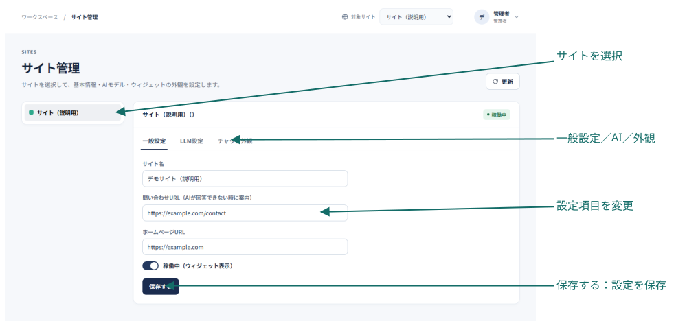

対象サイトを開く
サイト管理 → サイトを選択 → タブを選択 → 設定を変更 → 保存する → 保存しました。
基本情報 — 一般設定
サイト名、問い合わせ先、ホームページ、利用状態を変更します。問い合わせ先は、回答できない場合の連絡先です。ホームページは、低評価時の案内に使用します。
回答方法 — LLM設定
Ollamaにインストール済みのモデルを選択します。一覧を取得できない場合はOllamaを確認し、再読込してください。手動入力はインストール済みモデル名が分かる場合に使用します。独自ルール欄では、サイトごとの表現や回答方針を追加できます。
チャットの見た目 — チャット外観
テーマカラーとアバター画像のURLを設定します。訪問者のブラウザーからアクセスできる画像を使用してください。
保存と確認
- 設定画面の保存するを押します。
- 保存しました。と表示されることを確認します。
- ウィジェット確認で変更を確認します。必要に応じてプレビューページを再読込してください。
確認すること
保存した設定がサイト情報とチャットに反映されます。サイトを無効にすると、新しい質問を受け付けなくなります。